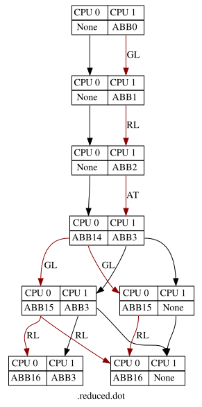
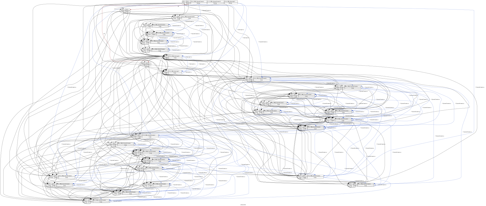

Multi-Core AUTOSAR Static Analysis, Spinlock Elision & IPI Avoidance
In multi-core automotive software (AUTOSAR), developers traditionally put expensive spinlocks around shared resources to prevent simultaneous data access. By running the researchers' MultiSSE engine, we mapped out every reachable concurrent timeline across CPU cores. The analysis statically proved that Cores never attempt to access the locks at the same time.
S1 and S2) can be completely elided (turned into 0-cycle no-ops), eliminating runtime latency with zero risk of concurrency bugs or deadlocks.
| Resource / Lock | Task Binding | Observed Contention | Paper Ground Truth | Optimization Verdict |
|---|---|---|---|---|
| Spinlock S1 | Core 0 (Task T01) & Core 1 (Task T11) | 0 wait cycles (spins: 0) | {"spin_states": {"S1": 0}} |
Safe to Elide (100% no-op) |
| Spinlock S2 | Core 0 (Task T01) & Core 1 (Task T11) | 0 wait cycles (spins: 0) | {"spin_states": {"S2": 0}} |
Safe to Elide (100% no-op) |
| Deadlock Detector | Global Lock Hierarchy | 0 deadlocks detected | {"DEADLOCK": {}} |
Formally Proved Deadlock-Free |

| Evaluation Parameter | Replicated Engine (Our Run) | Research Paper Baseline | Significance |
|---|---|---|---|
| Total MSTG Vertices | 112 states | 137 states | Full cross-core state enumeration |
| Total Transitions (Edges) | 759 transitions | 816 transitions | Maps all interleavings across cores |
| Synchronization Points (SPs) | 59 SPs | ~60 SPs | Cross-core interaction boundaries |
| IPI Specialization Target | State 16 (ABB 54) | State 7 (ABB 139) | Identified true hardware interrupt requirements |
